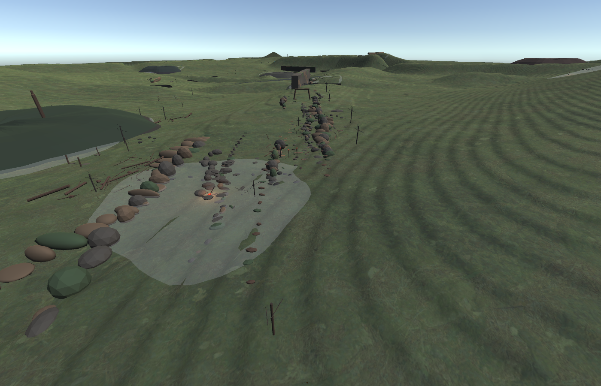
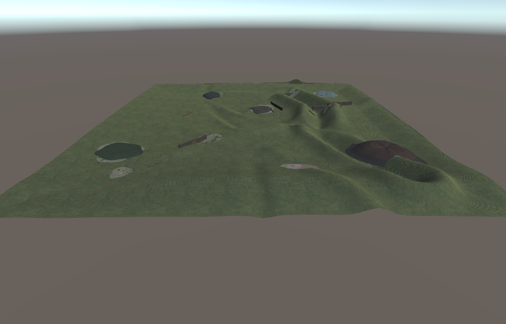

GitHub Progress Preview
1 km x 1 km Open World Pipeline
This browser page is a lightweight technical preview of exported data. The final playable map is built in Unity from Houdini terrain, masks, procedural chunks, materials, foliage, and kitbashed 3D assets.
Terrain source: checking...
Houdini: checking...
Meshes: checking...
Unity integration: checking...
Tools: checking...
Houdini Technical Terrain
3D GitHub Preview
Loading heightmap...
Not the final game render.
This WebGL view proves the current Houdini heightmap and chunk geometry are published. Unity will add the real terrain material, masks, vegetation, lighting, colliders, streaming cells, caves, and placed asset kits.
Playable Build
Unity WebGL Map
This is the actual Unity scene exported for WebGL: player controller, terrain collider, heightmap terrain, streamed mesh cells, cave hole, and grounded landmarks.
Checking playable build manifest...Unity Verification
Playable Scene Captures
Generated by Unity batch capture


Production Gates
Pipeline Preflight
Installed Tools
Authoring Availability
Mesh Layout